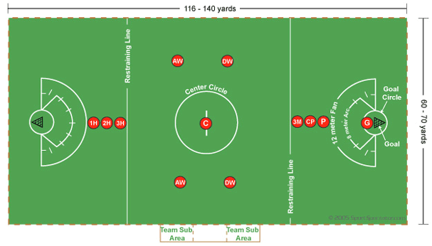

Hello!Below you will find out how to play lacrosse.
This is a picture of a lacrosse field.
In order to start a game two players hold their sticks back to back with a ball in the middle and flick it upwards and try to catch the ball. This is a called a draw. On one team there are 12 players. The objective is to go to the opposite side of the field and score on the opposing team. T
You may never cover the ball with the back of your stick, it is illegal and will result in a turnover. This is something to keep in mind when fighting for a ground ball with another player.
You also cannot cover anyone's stick. Even if it is an accident it will lead to penalization.
When checking someone's stick it is imperative to do so in a controlled manner. Check and bring the stick back towards you. A slashing motion is illegal and more importantly dangerous.
You also can't check the back of someone's stick or check their stick if it is near their head.
No empty stick checks. There is never a need for this and you should always have control of your stick.
Players are never allowed in the goalie's circle.Going in the circle while making a shot automatically nulls it.
Defensive players are allowed to block a shot in the circle with their stick but are not allowed to go in.
Look over excptio rule like goalie leaves or something
Defensive players may not go into the arc for longer than 3 seconds if they are not gaurding a player. They can be in the arclonger if the offensive player is behid the net and they are facing their direction.
When a foul occurs the offending player must stand four meters behind the playerwhile they decide their next play.
The restraining lines dictates where players should be. An offside is called when a team has more than seven players on or over the restraining line in its offensive end or more than eight players on or over the restraining line in its defensive end.
To avoid this always be aware of your teamamates locations and communicate. Players are allowed to switch their positions as long as someone changes with them.
Offensive players are not allowed to run into a defensive player who has established their position